260206芯片涨价的底层逻辑与展望
本轮半导体涨价由存储芯片需求暴增引发，沿"产能倾斜→晶圆代工/封测涨价→设计公司涨价"层层传导。 本期讲清涨价的底层逻辑、如何辨别真正能把利润留在体内的环节（寡头供应+低端品类）， 以及存储、利基存储、晶圆厂、封测、功率、模拟、CPU 等各环节的涨价现状与持续性。
一、涨价的核心传导逻辑
这轮涨价的起点是AI 对数据存储的需求暴增，存储芯片供不应求。整个传导链条如下：

- 第一步：存储需求暴增 → 晶圆厂/封测把产能向存储倾斜 → 晶圆代工、封装测试涨价（中芯稼动率 95.8%、华虹 109.5%，日月光封测涨价 5%–20%）。
- 第二步：芯片制造成本上升 → 模拟、功率、逻辑等成熟制程设计公司纷纷跟着发涨价函。
- 第三步（风险）：原材料再涨 → 压力传到消费终端（手机/电脑/汽车），但终端需求疲软不敢跟涨——这就是"涨价能否持续"的问号。
关键提醒：不能看到公司发涨价函就以为股价要涨。如果只是被动把上游成本涨价转给下游、自己毛利率不变，那它并没有把利润留在体内，不是真正受益者。真正的好需求来自 AI（存储），消费电子/汽车等终端需求弱，涨价传导下去反而可能抑制需求、卖不动。
二、怎么找真正受益的环节
研究员给出三条选股标准：
- 确定性排序：存储 > 功率（服务器电源用中低压 MOSFET）。AI 需求最直接的是存储，功率次之；像车规 IGBT 产能完全过剩、汽车又拉垮，不要去找。
- 绕不开的环节：晶圆代工、封测是涨价绕不开的。但要选"更纯"的标的——中芯/华虹/长电/通富里含先进制程/先进封装逻辑，不纯是涨价链；纯成熟制程的弹性更大。
- 寡头供应 + 低端品类：只有两三家、能联合做庄涨价的细分最好；下游是小客户（白牌/消费类）议价能力弱，涨价能被接受。下游是大客户则不敢涨，怕得罪客户、丢市占率。
最核心的一条：这轮涨价的矛盾根源是存储供需失衡，而解决矛盾的唯一办法是存储扩产——也就是长鑫长存的扩产链，以及对应的半导体设备材料。扩产是持续的、不受终端需求波动影响的，这才是"炒涨价"绕不开、最确定的方向。
三、存储：本轮涨价的核心引擎
存储约占全球半导体市场 30%，其中 DRAM 约占 55–60%、NAND 约占 40%，NOR Flash 是第三大（约 3%）。分两类玩家：

- 主流型（DRAM/NAND）：五大家——美光、海力士、三星，加上国内长鑫、长存。吃制程微缩（DRAM 挤牙膏到 10nm 级）或 3D 堆叠层数（NAND 已 256 层、600 层前无瓶颈），都不用 EUV。
- 利基型（小容量 NAND/SLC/QLC、NOR Flash、DDR3/4）：国内设计公司主战场，如兆易创新、旺宏、普冉、东芯等。
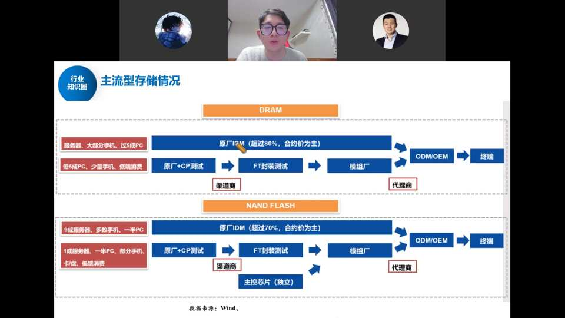
主流型存储产业链（合约价 vs 现货价）：合约价是原厂直发、与下游客户签协议的价格；现货价是市场留存价格，因经销商/分销商囤货而往往更高。DRAM/NAND 均由原厂 IDM（三星、海力士、美光、长鑫、长存）造芯→原厂+CP 测试→FT 封装测试→模组厂（江波龙、佰维、德明利等）→ODM/OEM→终端；NAND 多一颗主控芯片负责读写控制。DRAM 占 9 成服务器/多数手机/一半 PC 用原厂 IDM（超 80%，合约价为主）；NAND 占 9 成服务器/多数手机/一半 PC 用原厂 IDM（超 70%）。
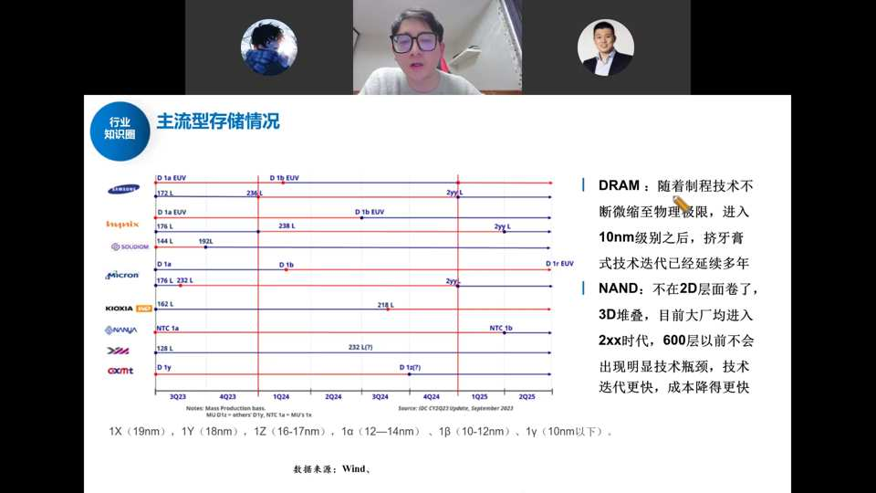
DRAM vs NAND 两条技术路线：DRAM 随制程不断微缩至物理极限，进入 10nm 级（1x/1y/1z/1α/1β/1γ）后基本"挤牙膏"式迭代多年，再往下 7nm 级以下几家大厂尚未正式进军——用 DUV 即可、不受 EUV 卡脖子。NAND 不再卷 2D 制程，改走 3D 堆叠层数，目前以 256 层为主，五六百层以前不会出现明显技术瓶颈，技术迭代更快、成本降得更快。
为什么 NAND/SSD 涨得最疯
过去机械硬盘 HDD 库存少、供给少，AI 服务器爆发后用 SSD（NAND）平替，数据中心 SSD 需求暴涨约 35%，而产能跟不上，供给严重失衡。叠加 HBF（GPU 与 NAND 融合的新产品）等新技术，NAND 需求爆炸。云厂 CAPEX 疯狂上修（谷歌 2026 年资本开支近 1800 亿美金、翻倍以上）。
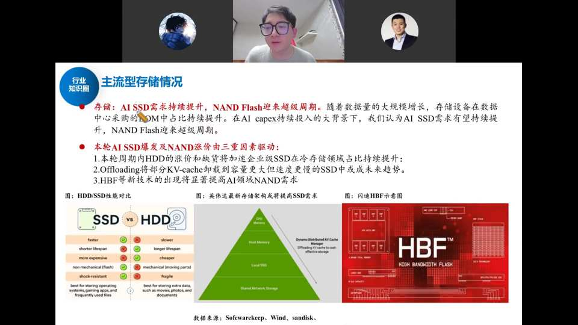
本轮 AI SSD 爆发及 NAND 涨价三重驱动：① 本轮周期内 HDD 涨价和缺货将加速企业级 SSD 在冷存储领域占比持续提升；② Offloading 将部分 KV-cache 卸载到容量更大但速度更慢的 SSD 中，成本优化趋势；③ HBF 等新技术显著提高 AI 领域 NAND 需求。HDD 年供货量约 1500–1600 亿 GB，数据中心过去约 1000 亿 GB，普遍测算 2026 年需求缺口 10%–15%，由 SSD 补齐，需求暴涨约 35%。
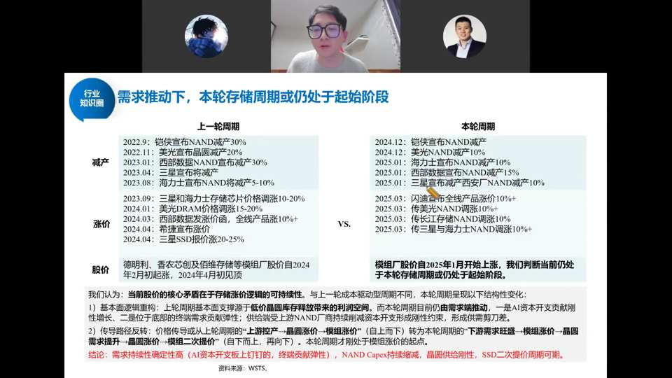
本轮（2024/12 起）与上一轮（2022/9 起）存储周期对比：减产——上轮铠侠/美光/西部数据/三星/海力士 NAND 减产 30%/20%/30%/5–10%/5–10%；本轮 2024/12 铠侠减产、2025/1 美光减产 10%、海力士减产 10%、西部数据减产 15%、三星宣布西安厂 NAND 减产 10%。涨价——上轮三星/海力士/美光存储芯片合约价涨 10–20%、美光 DRAM 涨 15–20%、西部数据 NAND 涨 10%；本轮闪迪/三星/海力士 NAND 涨 10%、长江存储涨 10%、传三星海力士 NAND 涨 10%。股价——德利微/香农芯创/佰维从 2024/2 初起涨、2024/4 见顶；模组厂股价 2025/1 月起涨。结论：需求持续性确定性高（AI 资本开支上锚定、终端贡献弹性），NAND Capex 持续缩减、晶圆供给刚性，SSD 二次提价周期可期。闪迪已跌十几个季度、才刚反转两个季度，本轮周期持续性可能很长。

- 企业级：DDR5 微涨（全球产能不缺），SSD 平均涨 10%；DDR4 涨疯了——长鑫退出 DDR4、海外大厂也退出，但工业/通信仍有需求，Q1/Q2/Q3 报价从 4.2→4.6→12 美金，四季度可能继续大涨。
- 利基存储跟涨：去年 Q4 NOR Flash 环比涨约 20%、DDR3 涨 40%、DDR4 4GB 以上涨 40%；今年 Q1 小容量 NOR Flash 预计再涨约 50%（华邦/旺宏/兆易转做大容量，小容量只剩普冉、恒烁、武汉新芯、聚辰四家联合涨价），NAND Q1 预计涨 40–50%、全年翻倍。
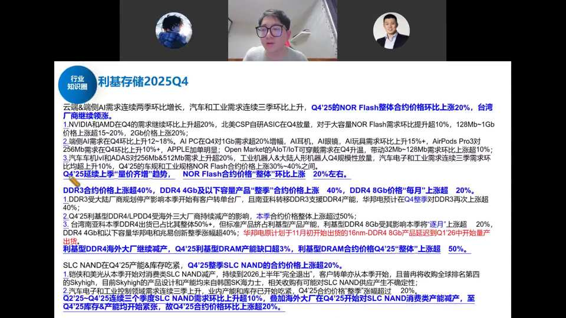
利基存储 2025Q4：云端&端侧 AI 需求连续两季环比增长，汽车和工业需求连续三季环比上升，Q4'25 的 NOR Flash 整体合约价格环比上涨 20%，台湾厂商继续领涨。Q4'25 延续上季"量价齐升"趋势，NOR Flash 合约价格整体环比上涨 20% 左右；DDR3 合约价格上涨超 50%、DDR4 4GB 及以下小容量产品"腰斩"合约价上涨 40%、DDR4 8Gb 价格"每月"上涨 20%；利基型 DRAM 海外大厂继续减产转产，Q4'25 利基型 DRAM 产能缺口超 30%、利基型 DRAM 合约价 Q4'25"整体"上涨 50%；SLC NAND 在 Q4'25 产能吃紧、Q4'25 整季 SLC NAND 合约价格上涨 20%。
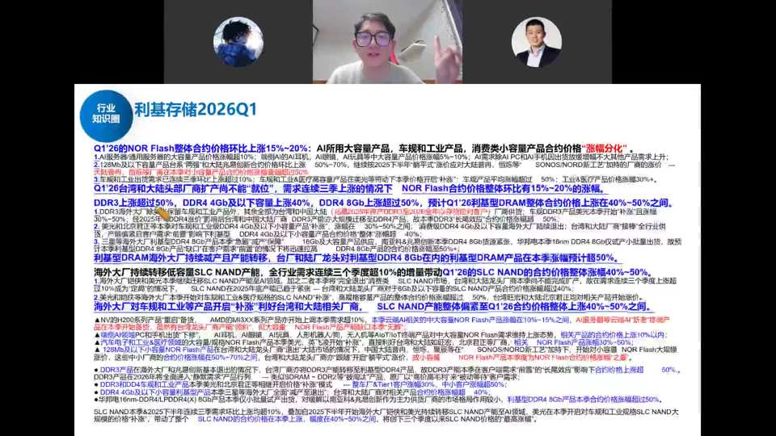
利基存储 2026Q1：Q1'26 的 NOR Flash 整体合约价环比上涨 15%–20%；AI 所用大容量产品、车规和工业产品、消费类小容量产品合约价格"涨幅分化"。Q1'26 台湾和大陆头部厂商扩产不"缺位"、需求连续三季上涨的情况下，NOR Flash 合约价格整体环比仍有 15%–20% 涨幅；DDR3 上涨超 50%、DDR4 4Gb 及以下容量上涨 40%、DDR4 8Gb 上涨超 50%，预计 Q1'26 利基型 DRAM 整体合约价格上涨 40%–50%；海外大厂继续转移低容量 SLC NAND 产能、全行业需求连续三个季度超 10% 增量带动 Q1'26 的 SLC NAND 合约价格整体涨幅 40%–50%；海外大厂对车规和工业等产品开启"补涨"，利好台湾和大陆相关厂商，SLC NAND 产能整体偏紧至 Q1'26 合约价格整体上涨 40%–50%。
存储交易的是"价格的边界"——只要价格持续上涨，股价理论上就持续上升。利润更多留在芯片设计公司体内（不是模组厂，模组厂靠库存赚的钱会随库存消化而消失）。闪迪已跌了十几个季度、才刚反转两个季度，这轮周期持续性可能还很长。
四、各环节涨价现状
- 晶圆厂：台积电退出成熟制程留下缺口，中芯稼动率 95.8%、华虹 109.5%，订单饱满下纷纷涨价；华虹成熟制程扩产停滞，供给有限。
- 封测：日月光宣布涨价 5%–20%（超此前预期近一倍），核心是存储需求旺 + 化工材料/大宗气体成本上涨。
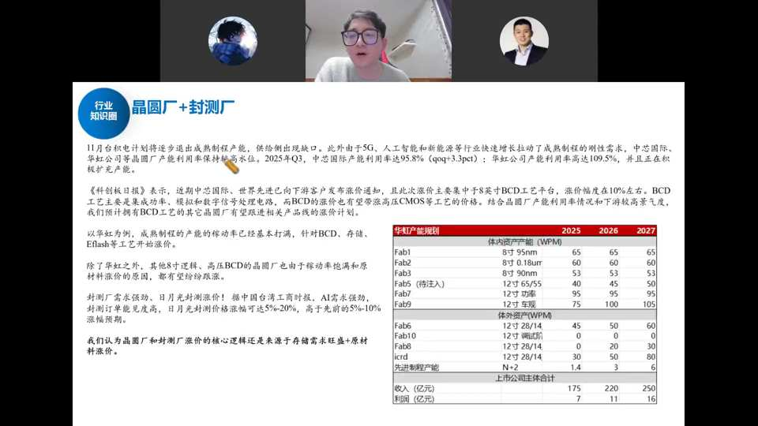
11 月台积电计划逐步退出成熟制程产能，供给侧出现缺口。此外由于 5G、人工智能和新能源等行业快速增长拉动了成熟制程的刚性需求，中芯国际、华虹公司等晶圆厂产能利用率保持较高水位。2025Q3 中芯国际产能利用率达 95.8%（qoq+3.3pct），华虹公司产能利用率高达 109.5%，并正在积极扩产。据《科创板日报》，近期中芯国际、世界先进已向下游客户发布涨价通知，且涨价价主要集中于 8 英寸 BCD 工艺平台，涨价幅度在 10% 左右；BCD 工艺主要是集成功率、模拟和数字信号处理电路，而 BCD 涨价也有望带动高压 CMOS 等工艺价格。以华虹为例，成熟制程稼动率已基本打满，针对 BCD、存储、Eflash 等工艺开始涨价；除华红外，其他 8 英寸逻辑、高压 BCD 的晶圆厂也由于稼动率饱和及原材料涨价而有望跟随。封测厂需求强劲，日月光封测涨价 5%–20%（高于此前 5%–10% 预期近一倍）。我们认为晶圆厂和封测厂涨价核心逻辑是存储需求旺盛 + 原材料涨价。
- 功率：英飞凌发涨价函。车规 IGBT 产能完全过剩（2021 年扩太多、汽车销量又差）涨不动；能涨的是中低压 MOSFET（服务器电源、储能拉货快），华润微、芯联集成、捷捷微电、新洁能、扬杰科技相继发涨价函。
- 模拟：TI/ADI 涨价，但模拟料号极多（TI 有 20 多万种）、国内能做的一堆，整体难涨；只有 LED driver、电源类等寡头格局（富满微、美芯晟、英集芯）好涨。
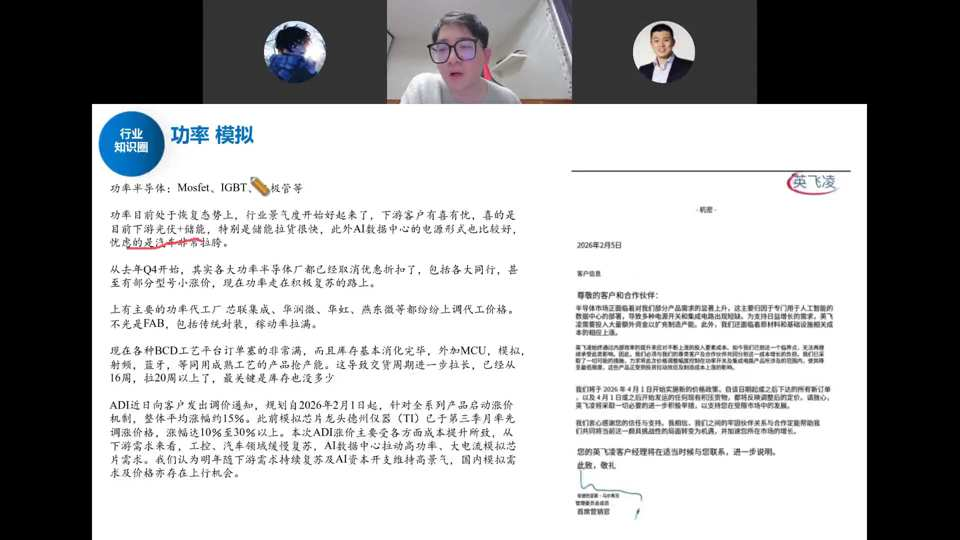
功率半导体（Mosfet、IGBT、二极管等）日前处于恢复态势，行业景气度开始好转，下游客户有喜有忧：喜的是下游光伏/储能拉货很快、数据中心情况较好；焦虑的是汽车非常拉胯（碳酸锂等原材料涨价、汽车销量大幅下跌）。从去年 Q4 开始，各大功率半导体厂都已取消优惠折扣、包括各同行，甚至部分型号小幅涨价，现在功率走在积极复苏路上。主要代工代工厂（芯联集成、华润微、华虹、燕东微）纷纷上调代工价格；各种 BCD 工艺订单非常满、库存基本消化完毕，外加 MCU、模拟、射频、蓝牙等同成熟工艺产能吃紧，导致交货周期从过去 16 周拉长到 20 周以上。ADI 近日向客户发出调价通知，规划 2026/2/1 起针对全系列产品启动涨价机制，整体平均涨幅约 15%（此前模拟芯片龙头德州仪器 TI 已于 Q3 率先率先调价，涨幅 10%–30%）。下游需求看，工程、汽车领域缓慢修复，AI 数据中心拉动高功率、大电流机型芯片需求。IGBT 因 2021 年车规扩产过多、汽车销量差而产能完全供过于求涨不动；能涨的是中低压 MOSFET（服务器电源、储能拉货快），华润微、芯联集成（功率代工绝对龙头，率先带动）、捷捷微电、新洁能、扬杰科技相继发涨价函。模拟芯片料号极多（TI 有 20 多万种）、国内能做的一堆，整体难涨；只有 LED driver、电源类等寡头格局（富满微、明微、美芯晟、英集芯）好涨——下游是议价能力弱的白牌/消费小客户。
- CPU：英特尔/AMD 涨价 10%–20%（英特尔 3/7 纳米产线转服务器、消费交付下滑，服务器厂恐慌性囤货）。短期持续性不强（英特尔稼动率 Q1 见底后会爬坡），但AI Agent 让 CPU 从"一股脑丢任务的搬运工"变成"反复与 GPU 调度反馈的大管家"，核利用率从不足 20% 拉到接近满载，长期 CPU 数量、以及交换芯片/内存接口芯片（如 Rambus）需求将爆发。
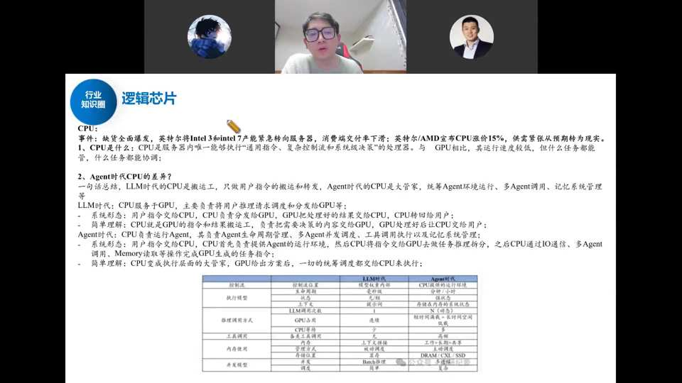
逻辑芯片·CPU：缺货全面爆发，英特尔将 Intel 3 和 Intel 7 产能紧急转向服务器，消费终端交付率下滑；英特尔/AMD 宣布 CPU 涨价 15%（对北美涨 10%、其他地区涨 20%），供需紧张从预期转为现实。AMD 去年 10 月即提示下游需求旺盛、行业库存水位极低；英特尔自身晶圆厂稼动率低、供给一般，服务器厂商囤完存储后同步恐慌性囤 CPU/电源类芯片。Agent 时代 CPU 角色巨变：LLM 时代 CPU 是搬运工（只做用户指令搬运和转发）；Agent 时代 CPU 是大管家（统筹 Agent 环境运行、多 Agent 调用、记忆系统管理）。系统形态上，LLM 时代用户指令交给 CPU、CPU 分发给 GPU、GPU 把结果交回 CPU；Agent 时代用户指令交给 CPU，CPU 先负责提供 Agent 运行环境，再把指令交给 GPU 做任务拆分，之后 CPU 通过 IO 通信、多 Agent 调用、Memory 读取等操作完成 GPU 生成的任务指令。简单理解：CPU 变成执行层面的大管家，GPU 出方案后一切统筹调度都交 CPU。
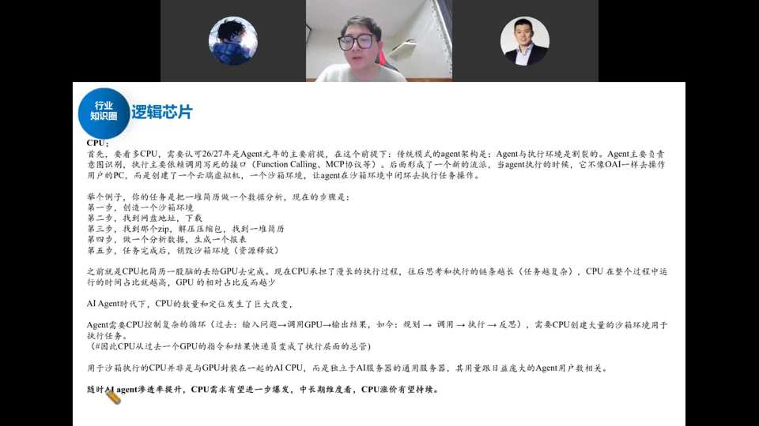
Agent 时代 CPU 定位：传统模式 Agent 架构与执行环境割裂，Agent 主要负责意图识别，执行主要依赖 function calling、MCP 协议等接口，形成新流派——Agent 执行时创建云端虚拟机/沙箱环境，让 Agent 在沙箱中闭环执行任务（找地址下载、解压、做数据分析、生成报表，完成后销毁沙箱释放资源）。过去 CPU 把简历一股脑丢给 GPU 完成，现在 CPU 承担漫长执行过程、反复跟 GPU 适配调节得到最优解。Agent 时代 CPU 控制复杂循环（过去：输入问题→调用 GPU→输出结果；如今：规划→调用→执行→反思），需要 CPU 创建大量沙箱环境执行任务，而沙箱执行的 CPU 是独立于 AI 服务器的通用服务器，用量随 Agent 用户数增长。过去 CPU 多核逻辑核利用率不到 20%，Agent 时代每核利用效率大幅拉高、接近满载，Agent 渗透提升后 CPU 核数量不够用→单机 CPU 数量从 2 颗向 3–4 颗扩张。随着 AI Agent 渗透率提升，CPU 需求有望进一步爆发，中长期 CPU 涨价有望持续；CPU 要频繁与 GPU、存储交互，带动交换芯片、内存接口芯片（Rambus 等）需求。
- MCU/SoC：中微半导、国科微等发涨价函——SoC 里嵌了 NOR/SRAM、MCU 用的 EFlash 与存储共线，存储涨价 + 厂商惜售带动。
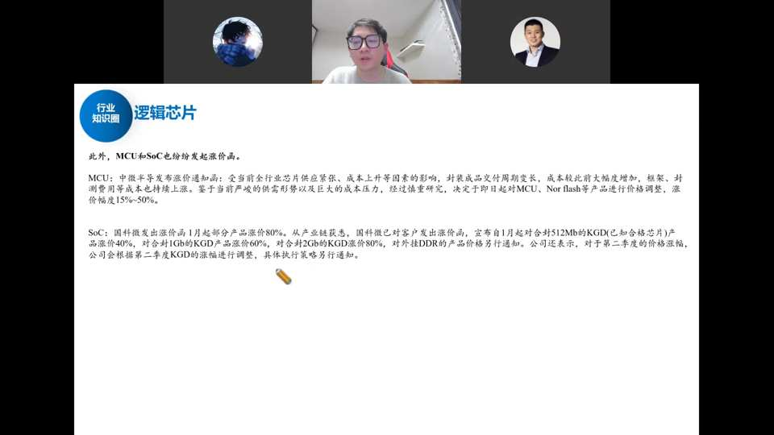
逻辑芯片·MCU/SoC：MCU 端，中微半导发布涨价通知函：受全行业芯片供应紧张、成本上升等因素影响，封装成品交付周期变长、成本较此前大幅增加，框架、封测费用等成本持续上涨；经慎重研究决定自即日起对 MCU、NOR Flash 等产品调价，涨价幅度 15%–50%。SoC 端，国科微发出涨价函：自 1 月起对合封 512Mb 的 KGD（已知合格芯片）产品涨价 40%、合封 1Gb KGD 涨价 60%、合封 2Gb KGD 涨价 80%，对外挂 DDR 产品价格另行通知；第二季度涨幅根据 KGD 涨幅调整。核心原因：SoC 本质是处理器嵌入 NOR/SRAM 等存储与接口芯片，MCU 特色工艺 EFlash 与存储共线（华虹 EFlash 产线存储和 MCU 共用），存储涨价 + 厂商惜售带动。
五、策略总结与确定性排序
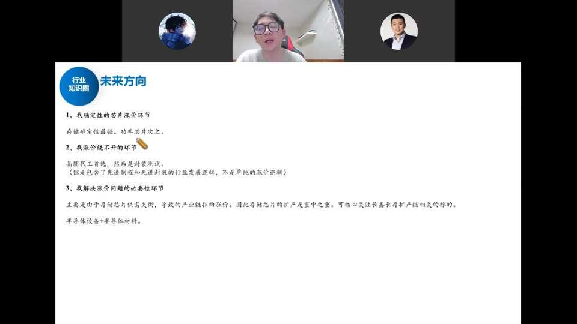
研究员总结的三个未来方向：① 找确定性的芯片涨价环节——确定性最强是存储，其次功率（服务器电源用中低压 MOSFET，不要找产能完全过剩的车规 IGBT）；② 找涨价绕不开的环节——晶圆代工厂、封测厂肯定会涨价，但要分辨市值纯度：中芯国际/华虹含先进制程逻辑、长电/通富含先进封装逻辑，要找纯成熟制程、涨价链弹性更大的标的，同时要找寡头供应格局 + 低端品类（下游是议价能力弱的小客户/白牌，联合做庄涨价、利润留在体内）；③ 找解决涨价问题的必要性环节——本轮涨价核心是存储供需失衡，存储芯片扩产是重中之重，即长鑫长存扩产链与半导体设备材料，扩产不受终端需求波动影响、最确定，且存储不吃制程（普通 DUV 即可、不受卡脖子），长鑫长存一旦扩产将对三星/美光/海力士形成致命威胁、有机会走向全球。
确定性从高到低：① 存储（最核心、持续性最强）；② 解决矛盾的存储扩产链——半导体设备材料（最确定，不受终端需求波动影响）；③ 功率里的中低压 MOSFET；④ 寡头供应+低端品类、能把利润留在体内的设计公司。
- 避开：车规 IGBT（产能过剩）、竞争分散的通用模拟（涨不动）、只被动传导成本而毛利率不变的环节。
- 不要盲目"见涨价函就买"：要分辨需求是 AI（可持续）还是消费/汽车（疲软、传导会反噬）。
（结尾小司补充宏观策略：当前市场倾向慢牛、波动收窄，要先建立"坐标系"再谈交易——① 交易倾向：先锁定低波动区间（如正负 100–150 点），再判断当月涨跌概率，到位置就"条件反射"式买入、不纠结会不会再跌 10%；② 仓位：波动小后驾驭难度变大，应抬高底仓、只动小部分仓位、少犯错；③ 方向选择：把资金掰成"爬山"（核心资产/新兴产业，一块砖一块砖垒、陪国家队、跌多了多垒几块、不猜顶猜底）与"过山车"（打短、抄冷灶、守株待兔）两部分，不要混着用。2026 是"十五五"开局第一年，两会后各地出细则，芯片半导体、人工智能应用、新能源/新材料/商业航天/低空经济等新兴产业偏"爬山"方向；核心是"相信国家不要添乱、在车上跟上核心资产"，而非短期博弈。）